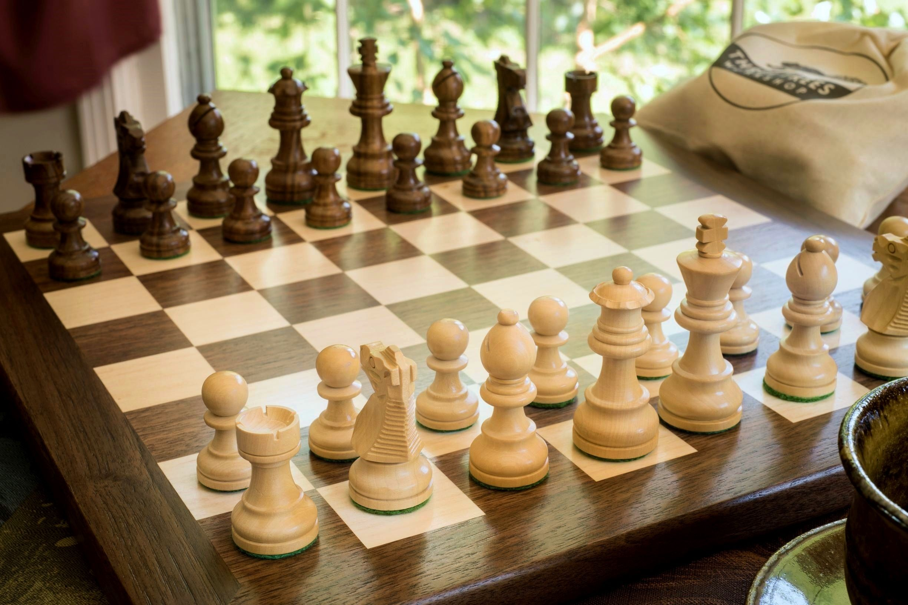
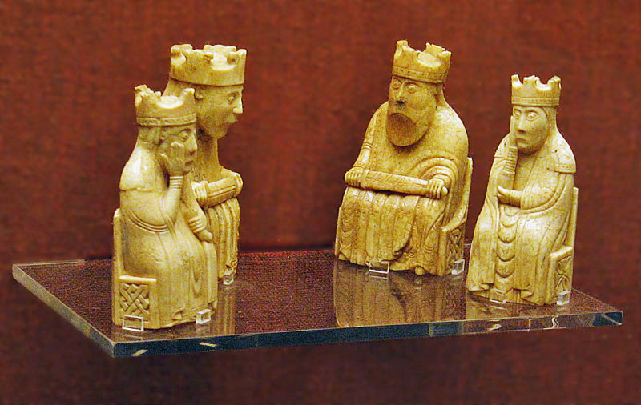
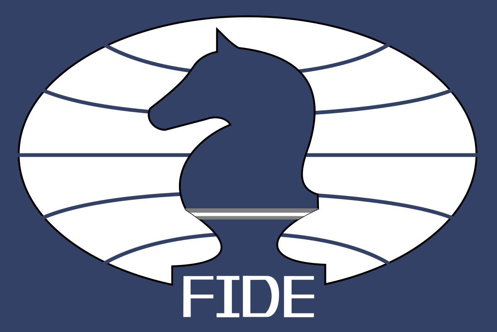

What is Chess?
Chess is a popular board game played between two players. It is an abstract strategy game that is played on a board of 64 squares arranged in an eight-by-eight grid. People have been playing chess for hundreds of years and as a result have developed complex strategies and tactics to outsmart their opponents and win the game. Today, chess is one of the world's most popular games, played by millions of people worldwide both causually and competitively.
Origins
The first game that resembles modern day chess orginated in India in the early 7th century. This game was called "chaturanga" and used many of the same pieces that chess still uses today. From there chess spread to Persia, through the Arabic world and eventually to Europe by the year 1000. While chess continued to spread around the world it was most popular in Europe and by the late 15th century chess began to resemble it's modern form. In modern times, competitive chess has lead to the creation of chess theory and increased the popularity of the game greatly.
FIDE
The International Chess Federation, more commonly known as FIDE (from its French translation) was created in 1924 in Paris. Today it is based in Switzerland and acts as the governing body of international chess competition. Currently there are 195 member federations in FIDE that host tournaments or other forms of competitive chess. FIDE organizes world championships for women, men, juniors, seniors, and the disabled. FIDE also awards titles such as Grandmaster to accomplished players, puzzle composers, and puzzle solvers.